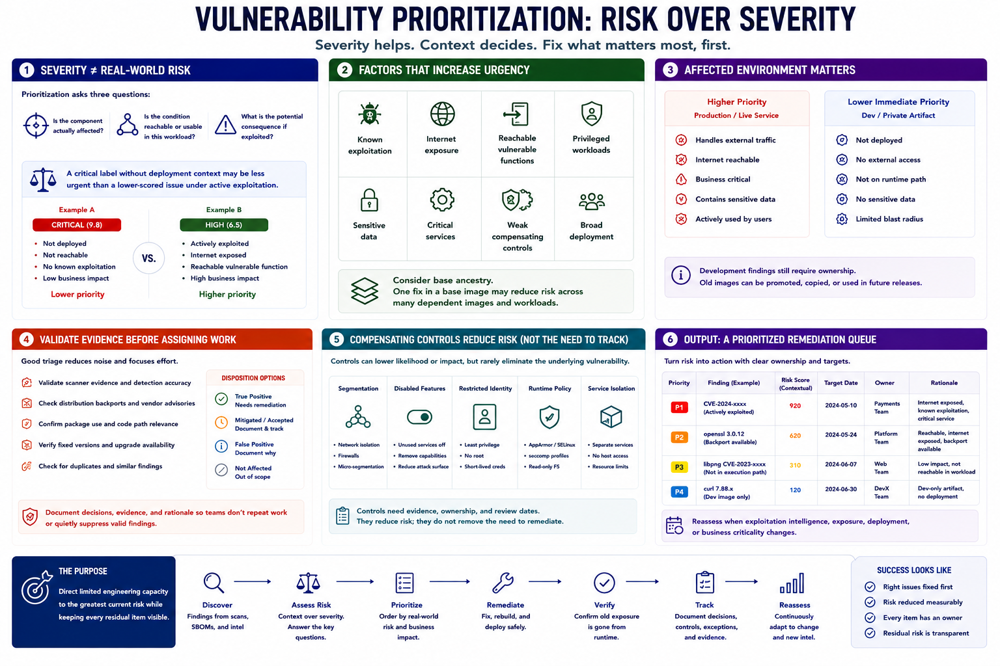

Prioritizing Container Patches
Connecting to LMS... Progress: in progress

Narration
Severity is useful, but it is not the same as real-world risk. Prioritization asks whether the component is affected, whether the condition is reachable or usable in the deployed workload, and what consequence would follow. A critical label without deployment context may be less urgent than a lower-scored issue under active exploitation.
Increase urgency for known exploitation, internet exposure, reachable vulnerable functions, privileged workloads, sensitive data, critical services, weak compensating controls, or broad deployment. Consider the image's base ancestry because one fix may address many dependent workloads.
Affected environment matters. A production image handling external traffic differs from a private development artifact that is never deployed. Development findings still require ownership because old images can be promoted later, copied into another registry, or become part of a future release.
Validate scanner evidence, distribution backports, package use, and fixed versions before assigning work. Document false positives and accepted mitigations so teams do not repeat the same analysis or quietly suppress a valid finding.
Compensating controls can reduce likelihood or impact through segmentation, disabled features, restricted identity, runtime policy, or service isolation. They rarely remove the need to track the underlying vulnerability and should have evidence, ownership, and review dates.
Prioritization should produce an ordered remediation queue, target date, owner, and rationale. Reassess when exploitation intelligence, exposure, deployment, or business criticality changes. The purpose is to direct limited engineering capacity toward the greatest current risk while keeping every residual item visible.